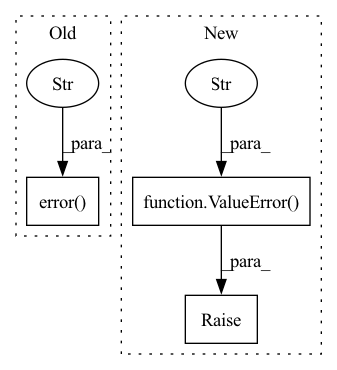

Pattern ID :18107
Before Change
log.error("Multiplicative seasonality requires trend.")
raise ValueError
if self.config_seasonality.mode not in ["additive", "multiplicative"]:
log.error(f"Seasonality Mode {self.config_seasonality.mode} not implemented. Defaulting to "additive"." )
self.config_seasonality.mode = "additive"
// Seasonality parameters for global or local modelling
self.season_params = nn.ParameterDict(
{After Change
if self.config_seasonality.mode == "multiplicative" and self.config_trend is None:
raise ValueError("Multiplicative seasonality requires trend.")
if self.config_seasonality.mode not in ["additive", "multiplicative"]:
raise ValueError(f"Seasonality Mode {self.config_seasonality.mode} not implemented." )
// Initialize seasonality
self.seasonality = get_seasonality(
config=config_seasonality,
id_list=id_list,In pattern: SUPERPATTERN
Frequency: 4
Non-data size: 3
Instances Fragment ID: 59312025
Project Name: ourownstory/neural_prophet
Commit Name: 75ccf1abe6a686ab86362d81420000b73b4f4f93
Time: 2023-02-08
Author: karl.richter@tum.de
File Name: neuralprophet/time_net.py
M Class Name: TimeNet
N Class Name: TimeNet
M Method Name: __init__(21)
N Method Name: __init__(21)
M Parent Class: pl.LightningModule
N Parent Class: pl.LightningModule
M File Name: neuralprophet/time_net.py
N File Name: neuralprophet/time_net.py
M Start Line: 215
M End Line: 269
N Start Line: 249
N End Line: 266
Before Change
if len(src_spans_ind) % 2 != 0:
if do_log(log_counter):
tokenizer._decode_use_source_tokenizer = True
logging.error(f"Corrupted span in src string: [{tokenizer.convert_tokens_to_string(src_tokens)}]" )
tokenizer._decode_use_source_tokenizer = False
log_counter += 1
// this almost never happens but if it does it is usually because quotation is missing from the end of src_tokens
// we temporary fix this by adding """ to the end of src_tokensAfter Change
if len(src_spans_ind) % 2 != 0:
if do_log(log_counter):
tokenizer._decode_use_source_tokenizer = True
raise ValueError(f"Corrupted span in src string: [{tokenizer.convert_tokens_to_string(src_tokens)}]" )
tokenizer._decode_use_source_tokenizer = True
src_strings = tokenizer.convert_tokens_to_string(src_tokens)
tokenizer._decode_use_source_tokenizer = False Fragment ID: 59312024
Project Name: stanford-oval/genienlp
Commit Name: d1831a08fbcbbf17e0c02896e9f2a93ff2f032bb
Time: 2021-06-27
Author: mehrad@stanford.edu
File Name: genienlp/model_utils/translation.py
M Class Name: AnonimousClass
N Class Name: AnonimousClass
M Method Name: force_replace_quoted_params(4)
N Method Name: force_replace_quoted_params(4)
M Parent Class:
N Parent Class:
M File Name: genienlp/model_utils/translation.py
N File Name: genienlp/model_utils/translation.py
M Start Line: 183
M End Line: 249
N Start Line: 185
N End Line: 241
Before Change
first_block_index, last_block_index = block_indices.split(":")
first_block_index, last_block_index = map(int, map(str.strip, (first_block_index, last_block_index)))
except Exception as e:
logger.error(f"Failed to parse --block_indices ({e}), must be start:end (e.g. 0:18)" )
raise
block_indices = range(first_block_index, last_block_index)
num_blocks = len(block_indices)
self.strict_block_indices, self.num_blocks = block_indices, num_blocksAfter Change
first_block_index, last_block_index = block_indices.split(":")
first_block_index, last_block_index = map(int, map(str.strip, (first_block_index, last_block_index)))
except Exception as e:
raise ValueError(f"Failed to parse `--block_indices {block_indices}`, must be start:end (e.g. 0:18)" )
block_indices = range(first_block_index, last_block_index)
num_blocks = len(block_indices)
self.strict_block_indices, self.num_blocks = block_indices, num_blocks
Fragment ID: 59312026
Project Name: bigscience-workshop/petals
Commit Name: a617ce3cfa9e08eee2fe4982343e0689c5fc5cfe
Time: 2023-01-10
Author: borzunov.alexander@gmail.com
File Name: src/petals/server/server.py
M Class Name: Server
N Class Name: Server
M Method Name: __init__(1)
N Method Name: __init__(1)
M Parent Class:
N Parent Class:
M File Name: src/petals/server/server.py
N File Name: src/petals/server/server.py
M Start Line: 149
M End Line: 171
N Start Line: 150
N End Line: 174